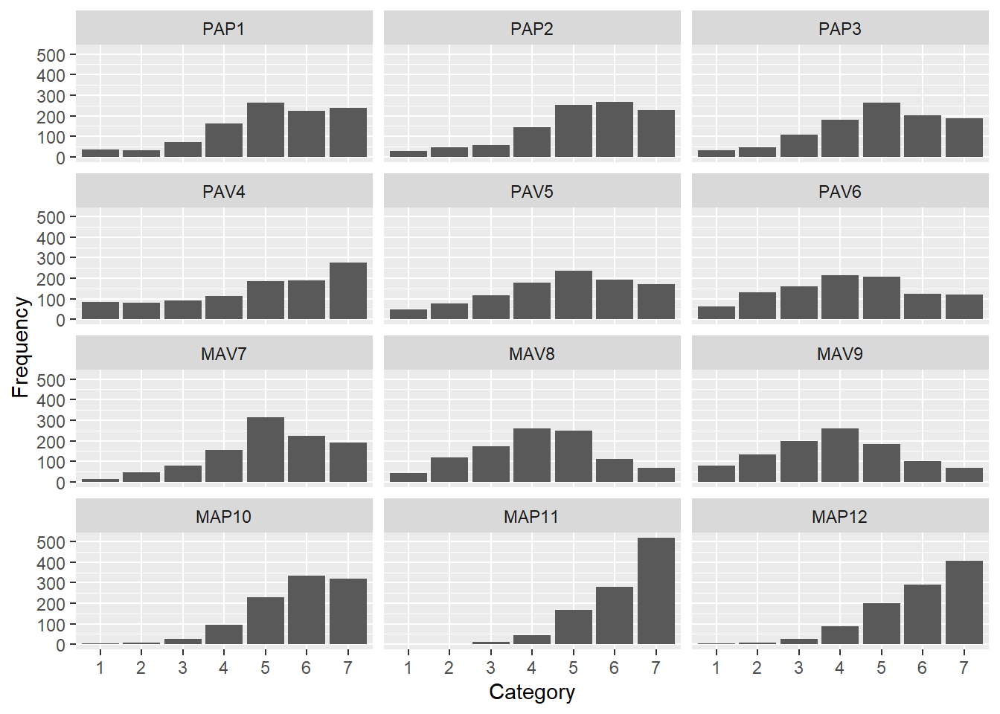
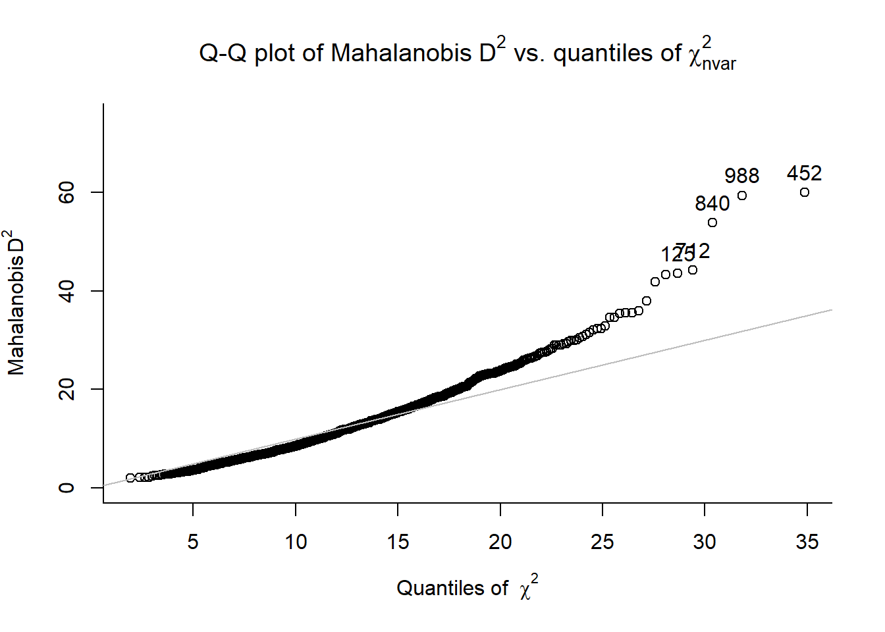
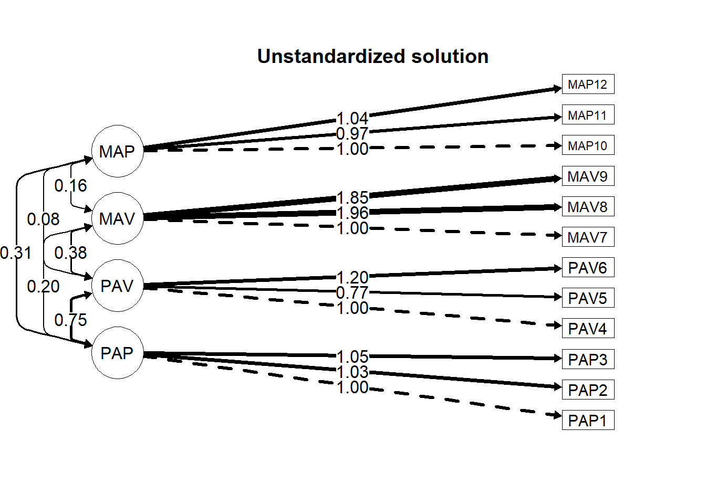
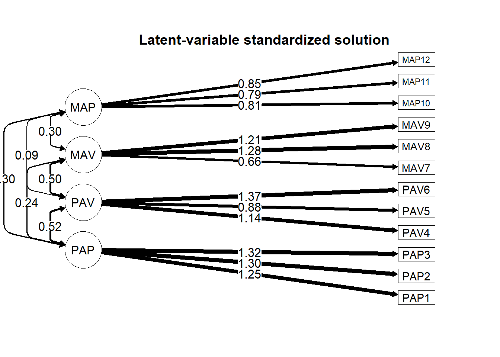
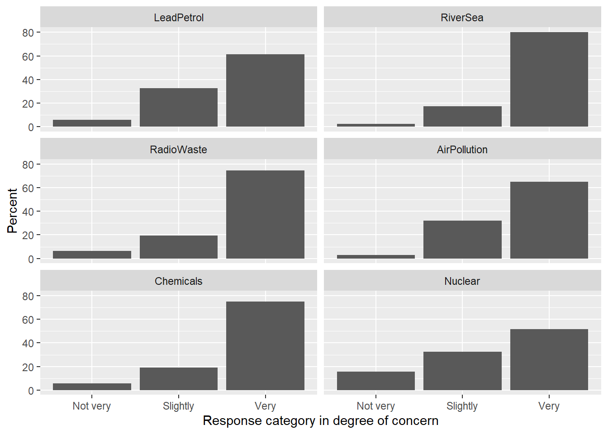

Chapter 13 Confirmatory Factor Analysis
The lavaan package (Rosseel et al., 2020) is well developed and frequently used for estimating confirmatory factor analysis (CFA) models. Accompanying lavaan, the semTools package (Jorgensen et al., 2020) provides additional resources such as for comparing models and for estimating internal consistency reliability coefficients.
In this chapter, we will do the following:
- carry out the preparatory steps to CFA,
- conduct a CFA and examine the fit indices, parameter estimates, and other information contained in the CFA fitted object,
- use alternative model specifications and conduct a model comparison,
- estimate and save persons’ factor scores,
- calculate coefficient omega, and
- conduct a CFA with categorical data.
13.1 Preparatory steps
First let’s read in our data and take a look at the descriptive statistics and the correlation matrix.
## 'data.frame': 1022 obs. of 13 variables:
## $ PID : chr "P0001" "P0002" "P0003" "P0004" ...
## $ PAP1 : int 6 7 6 6 7 7 7 7 7 5 ...
## $ PAP2 : int 7 7 5 6 7 7 7 7 7 6 ...
## $ PAP3 : int 6 7 5 6 7 7 7 5 7 5 ...
## $ PAV4 : int 6 7 5 6 7 7 7 7 7 6 ...
## $ PAV5 : int 5 2 5 6 4 4 7 6 4 7 ...
## $ PAV6 : int 1 7 6 6 7 7 7 7 7 3 ...
## $ MAV7 : int 7 6 5 4 3 6 7 5 4 6 ...
## $ MAV8 : int 6 2 6 1 6 7 7 3 4 7 ...
## $ MAV9 : int 6 2 4 1 5 7 7 1 5 7 ...
## $ MAP10: int 7 7 7 6 7 7 7 7 7 6 ...
## $ MAP11: int 7 7 7 6 7 7 7 7 7 7 ...
## $ MAP12: int 7 7 6 5 7 7 7 7 7 7 ...With these data, there are four hypothesized constructs, which are described in Bandalos (2018, pp. 335–337). The first three letters of each item’s name reminds us which construct it is intended to represent.
| n | M | sd | Med | Min | Max | Skew | Kurtosis | seM | |
|---|---|---|---|---|---|---|---|---|---|
| PAP1 | 1022 | 5.15 | 1.55 | 5 | 1 | 7 | -0.75 | 0.12 | 0.05 |
| PAP2 | 1022 | 5.20 | 1.53 | 5 | 1 | 7 | -0.85 | 0.24 | 0.05 |
| PAP3 | 1022 | 4.91 | 1.55 | 5 | 1 | 7 | -0.51 | -0.32 | 0.05 |
| PAV4 | 1022 | 4.86 | 1.94 | 5 | 1 | 7 | -0.60 | -0.82 | 0.06 |
| PAV5 | 1022 | 4.71 | 1.68 | 5 | 1 | 7 | -0.43 | -0.62 | 0.05 |
| PAV6 | 1022 | 4.19 | 1.72 | 4 | 1 | 7 | -0.05 | -0.87 | 0.05 |
| MAV7 | 1022 | 5.10 | 1.42 | 5 | 1 | 7 | -0.59 | -0.06 | 0.04 |
| MAV8 | 1022 | 4.14 | 1.50 | 4 | 1 | 7 | -0.06 | -0.54 | 0.05 |
| MAV9 | 1022 | 3.89 | 1.60 | 4 | 1 | 7 | 0.06 | -0.64 | 0.05 |
| MAP10 | 1022 | 5.76 | 1.18 | 6 | 1 | 7 | -1.03 | 1.22 | 0.04 |
| MAP11 | 1022 | 6.21 | 0.98 | 7 | 1 | 7 | -1.22 | 1.34 | 0.03 |
| MAP12 | 1022 | 5.89 | 1.20 | 6 | 1 | 7 | -1.13 | 1.21 | 0.04 |
| PAP1 | PAP2 | PAP3 | PAV4 | PAV5 | PAV6 | MAV7 | MAV8 | MAV9 | MAP10 | MAP11 | MAP12 | |
|---|---|---|---|---|---|---|---|---|---|---|---|---|
| PAP1 | 1 | |||||||||||
| PAP2 | .690 | 1 | ||||||||||
| PAP3 | .702 | .712 | 1 | |||||||||
| PAV4 | .166 | .245 | .188 | 1 | ||||||||
| PAV5 | .163 | .248 | .179 | .380 | 1 | |||||||
| PAV6 | .293 | .421 | .416 | .482 | .377 | 1 | ||||||
| MAV7 | -.040 | .068 | .021 | .227 | .328 | .238 | 1 | |||||
| MAV8 | .143 | .212 | .217 | .218 | .280 | .325 | .386 | 1 | ||||
| MAV9 | .078 | .145 | .163 | .119 | .254 | .301 | .335 | .651 | 1 | |||
| MAP10 | .280 | .254 | .223 | .039 | .066 | .059 | .018 | .152 | .129 | 1 | ||
| MAP11 | .182 | .202 | .186 | .012 | -.008 | .051 | .052 | .202 | .177 | .558 | 1 | |
| MAP12 | .112 | .154 | .128 | .029 | .021 | .084 | .160 | .221 | .205 | .483 | .580 | 1 |
There is variation in the magnitude of these correlations. We see that the items hypothesized to load on the same constructs tend to more strongly correlate with each other than with the other items in the data set. Our descriptive statistics suggest the scale goes from 1 to 7. We should examine how many functioning scale points are used in each item. We also see that most of the items have negative skew, with most of the means and medians being higher than the midpoint of 4. MAP11 seems to have the strongest skew and smallest standard deviation.
Let’s shift our attention to the number of functioning scale points. We could use our custom-made function, unique_counter(), from the previous chapter. Alternatively, we can use the questionr package (Barnier et al., 2020), which also has a describe() function. To distinguish this from the function with the same name in the psych package, we’ll use the double colon to connect the package name to the function:
## [1022 obs. x 12 variables] tbl_df tbl data.frame
##
## $PAP1:
## integer: 6 7 6 6 7 7 7 7 7 5 ...
## min: 1 - max: 7 - NAs: 0 (0%) - 7 unique values
##
## $PAP2:
## integer: 7 7 5 6 7 7 7 7 7 6 ...
## min: 1 - max: 7 - NAs: 0 (0%) - 7 unique values
##
## $PAP3:
## integer: 6 7 5 6 7 7 7 5 7 5 ...
## min: 1 - max: 7 - NAs: 0 (0%) - 7 unique values
##
## $PAV4:
## integer: 6 7 5 6 7 7 7 7 7 6 ...
## min: 1 - max: 7 - NAs: 0 (0%) - 7 unique values
##
## $PAV5:
## integer: 5 2 5 6 4 4 7 6 4 7 ...
## min: 1 - max: 7 - NAs: 0 (0%) - 7 unique values
##
## $PAV6:
## integer: 1 7 6 6 7 7 7 7 7 3 ...
## min: 1 - max: 7 - NAs: 0 (0%) - 7 unique values
##
## $MAV7:
## integer: 7 6 5 4 3 6 7 5 4 6 ...
## min: 1 - max: 7 - NAs: 0 (0%) - 7 unique values
##
## $MAV8:
## integer: 6 2 6 1 6 7 7 3 4 7 ...
## min: 1 - max: 7 - NAs: 0 (0%) - 7 unique values
##
## $MAV9:
## integer: 6 2 4 1 5 7 7 1 5 7 ...
## min: 1 - max: 7 - NAs: 0 (0%) - 7 unique values
##
## $MAP10:
## integer: 7 7 7 6 7 7 7 7 7 6 ...
## min: 1 - max: 7 - NAs: 0 (0%) - 7 unique values
##
## $MAP11:
## integer: 7 7 7 6 7 7 7 7 7 7 ...
## min: 1 - max: 7 - NAs: 0 (0%) - 7 unique values
##
## $MAP12:
## integer: 7 7 6 5 7 7 7 7 7 7 ...
## min: 1 - max: 7 - NAs: 0 (0%) - 7 unique valuesIt seems like we effectively have a seven-point scale on each item. We can probably get away with treating the data as if they were continuous. We also have no missing data. Our data are borderline ordered categorical, so we may also choose to report the frequency counts per category. As we saw in the previous chapter, the questionr package’s freq() function is handy for this. Using it with the apply() function will print the results across multiple items. Here is the output for the first two items:
## $PAP1
## n % val%
## 1 35 3.4 3.4
## 2 32 3.1 3.1
## 3 71 6.9 6.9
## 4 162 15.9 15.9
## 5 262 25.6 25.6
## 6 222 21.7 21.7
## 7 238 23.3 23.3
##
## $PAP2
## n % val%
## 1 29 2.8 2.8
## 2 47 4.6 4.6
## 3 56 5.5 5.5
## 4 145 14.2 14.2
## 5 252 24.7 24.7
## 6 267 26.1 26.1
## 7 226 22.1 22.1As we saw in the last chapter, we can use a custom function to save these to a data frame, which we can print to our console, save to a CSV file, or use in a plot.
freq_dframer <- function(data){
library(dplyr)
library(questionr)
quest_out <- apply(data, 2 , questionr::freq)
templist <- list()
for (i in 1:length(names(quest_out))) {
temp <- data.frame(Item = rep(names(quest_out[i]), nrow(quest_out[[i]])),
Category = row.names(quest_out[[i]]),
quest_out[[i]])
templist[[i]] <- temp
}
freqs <- dplyr::bind_rows(templist)
row.names(freqs) <- NULL
names(freqs)[3:5] <- c("Frequency", "Percent", "Pcnt_of_nonMissing")
freqs$Item <- factor(freqs$Item, levels = unique(freqs$Item))
freqs
}
freqout <- freq_dframer(dat)
# write.csv(freqout, "freqout.csv", row.names = F)We can generate a facet plot from our data frame to display the frequency counts or percentages of each category on each item. The ggplot() below plots frequency counts on the Y axis but we can change it to y = Percent.
library(ggplot2)
library(gridExtra)
ggplot(freqout, aes(x = Category, y = Frequency)) +
geom_col() +
facet_wrap(. ~ Item, nrow = 4, )
It seems like 75% of our variables have ample responses in all of the categories. We might be concerned with MAP11 and maybe with MAP10 and MAP12 because there are not many responses in the lower two categories. If we were to treat these data as categorical data (which we probably don’t need to because there are seven categories), these low counts would reduce the precision of our measurement of these categories on these items.
If all we’re looking for are the frequency of responses to each category in each item, a simple approach is to specify our items as being ordered factors instead of numeric and using the summary() function on our data.
## PAP1 PAP2 PAP3 PAV4 PAV5 PAV6 MAV7 MAV8 MAV9
## 1: 35 1: 29 1: 31 1: 84 1: 47 1: 64 1: 13 1: 42 1: 80
## 2: 32 2: 47 2: 46 2: 82 2: 76 2:133 2: 46 2:118 2:132
## 3: 71 3: 56 3:109 3: 93 3:117 3:159 3: 79 3:174 3:197
## 4:162 4:145 4:182 4:114 4:180 4:216 4:154 4:261 4:260
## 5:262 5:252 5:265 5:185 5:237 5:206 5:314 5:248 5:185
## 6:222 6:267 6:203 6:189 6:193 6:125 6:225 6:111 6:100
## 7:238 7:226 7:186 7:275 7:172 7:119 7:191 7: 68 7: 68
## MAP10 MAP11 MAP12
## 1: 6 1: 1 1: 5
## 2: 10 2: 1 2: 10
## 3: 26 3: 13 3: 26
## 4: 96 4: 45 4: 88
## 5:230 5:166 5:199
## 6:333 6:278 6:289
## 7:321 7:518 7:40513.1.1 Addressing assumptions
We can examine linearity of all pairs of variables using the plot(dat) function or the ggpairs(dat) function from the GGally package (Schloerke et al., 2020), but it will be difficult to detect from these scatterplots whether there is any serious violation of the linearity assumption because of the limited range in values of the scale. This can take a minute to run. Nonetheless, we proceed.
We can detect multivariate outliers using the psych package’s outlier() function.

We see several that are far from our expected line. Let’s conduct a formal test of outliers.
alph_crit <- .001
n_nu <- ncol(dat) # Number of variables
crit_val <- (qchisq(p = 1-(alph_crit), df = n_nu))
crit_val## [1] 32.90949library(dplyr)
outers <- data.frame(outLiars) %>%
mutate(PID = raw$PID) %>%
filter(outLiars > crit_val) %>%
arrange(desc(outLiars))
outers## outLiars PID
## 1 60.02265 P0452
## 2 59.38391 P0988
## 3 53.85349 P0840
## 4 44.19936 P0712
## 5 43.56740 P0125
## 6 43.25519 P0194
## 7 41.84562 P0371
## 8 37.99227 P0705
## 9 35.93353 P0172
## 10 35.56532 P0486
## 11 35.55273 P0694
## 12 35.43172 P0743
## 13 34.65967 P0296
## 14 34.56138 P0760
## 15 32.92628 P0199With a critical value of \(32.91\), we have 15 outliers, which is 1.47% of the 1022 cases. We could compare the CFA model with these cases removed with one that has them included. If the fit indexes and parameter estimates are arguably similar, we could retain our outliers.
Let’s see if we should bother assuming our data are multivariate normal. We saw from the frequency plots and the descriptive statistics that there is some skew in some of the variables. We can use the mardiaKurtosis() function from the semTools package.128
## b2d z p
## 195.531 24.007 0.000Even though the absolute values of the skew and kurtosis of each of the variables in our earlier descriptive statistics were all below 2.0, there appears to be a non-normal distribution. With the Mardia kurtosis z-statistic (24.007) being statistically significant, the assumption of multivariate normality was not met.129
This result should inform our decisions about which estimation method to use and whether to use adjustments. Instead of using maximum likelihood estimation, we can use a robust estimation approach, specifically the “maximum likelihood robust” (MLR) method.130
After examining these assumptions, we should report their results along with a qualifier about how much confidence or caution we should carry in interpreting the results of the CFA model.
13.2 Fitting a CFA model
Before we fit the CFA model using the lavaan package, we need to provide the CFA model specification. We are specifying four factors, which we’re naming PAP, PAV, MAV, and MAP. We indicate which variables load on which factor with the =~ operator in lavaan’s language. The default is to set each factor’s metric to be on the scale of its first variable.
library(lavaan)
mymod <- "PAP =~ PAP1 + PAP2 + PAP3
PAV =~ PAV4 + PAV5 + PAV6
MAV =~ MAV7 + MAV8 + MAV9
MAP =~ MAP10 + MAP11 + MAP12"Now that we have the model specification saved to our mymod object, we can fit the model to our data using the cfa() function. The first argument is the model specification. In the data = argument, we include the raw data set. We use the estimator = "MLR" to specify the robust maximum likelihood estimation method. We can use the mimic = "Mplus" argument if we wish to acquire output that is similar to what it would be if we were to use Mplus software.
At this point, we should look at whether there were any errors when we attempt to fit the model. For instance, if we get a warning that says The variance-covariance matrix of the estimated parameters (vcov) does not appear to be positive definite! there is something wrong with our model specification. More than likely, our model is underidentified and we need to go back to our specification.
If we did not have access to the raw data but only had the covariance matrix, S, we can include the sample.cov = argument in place of the data = argument. We also need to specify the number of persons, which here we’ll assign to the object n_p.131
S <- cov(dat)
n_p <- nrow(dat)
cfa_fit_S <- cfa(mymod,
sample.cov = S,
sample.nobs = n_p,
mimic = "Mplus")We will use the earlier specification, with the raw data and the robust estimation. We can use the summary() function on our object that contains the CFA result. We can also ask for the fit indices, standardized coefficients, and the r-square of the loadings using these respective three arguments.
## lavaan 0.6-7 ended normally after 46 iterations
##
## Estimator ML
## Optimization method NLMINB
## Number of free parameters 42
##
## Number of observations 1022
## Number of missing patterns 1
##
## Model Test User Model:
## Standard Robust
## Test Statistic 283.977 260.087
## Degrees of freedom 48 48
## P-value (Chi-square) 0.000 0.000
## Scaling correction factor 1.092
## Yuan-Bentler correction (Mplus variant)
##
## Model Test Baseline Model:
##
## Test statistic 4421.866 3657.087
## Degrees of freedom 66 66
## P-value 0.000 0.000
## Scaling correction factor 1.209
##
## User Model versus Baseline Model:
##
## Comparative Fit Index (CFI) 0.946 0.941
## Tucker-Lewis Index (TLI) 0.926 0.919
##
## Robust Comparative Fit Index (CFI) 0.947
## Robust Tucker-Lewis Index (TLI) 0.927
##
## Loglikelihood and Information Criteria:
##
## Loglikelihood user model (H0) -20006.917 -20006.917
## Scaling correction factor 1.227
## for the MLR correction
## Loglikelihood unrestricted model (H1) -19864.929 -19864.929
## Scaling correction factor 1.155
## for the MLR correction
##
## Akaike (AIC) 40097.835 40097.835
## Bayesian (BIC) 40304.875 40304.875
## Sample-size adjusted Bayesian (BIC) 40171.478 40171.478
##
## Root Mean Square Error of Approximation:
##
## RMSEA 0.069 0.066
## 90 Percent confidence interval - lower 0.062 0.058
## 90 Percent confidence interval - upper 0.077 0.073
## P-value RMSEA <= 0.05 0.000 0.000
##
## Robust RMSEA 0.069
## 90 Percent confidence interval - lower 0.061
## 90 Percent confidence interval - upper 0.077
##
## Standardized Root Mean Square Residual:
##
## SRMR 0.046 0.046
##
## Parameter Estimates:
##
## Standard errors Sandwich
## Information bread Observed
## Observed information based on Hessian
##
## Latent Variables:
## Estimate Std.Err z-value P(>|z|) Std.lv Std.all
## PAP =~
## PAP1 1.000 1.255 0.812
## PAP2 1.035 0.037 28.243 0.000 1.298 0.850
## PAP3 1.052 0.038 27.683 0.000 1.320 0.850
## PAV =~
## PAV4 1.000 1.144 0.591
## PAV5 0.772 0.062 12.356 0.000 0.884 0.526
## PAV6 1.195 0.082 14.615 0.000 1.368 0.797
## MAV =~
## MAV7 1.000 0.657 0.462
## MAV8 1.956 0.169 11.600 0.000 1.285 0.855
## MAV9 1.845 0.160 11.547 0.000 1.212 0.756
## MAP =~
## MAP10 1.000 0.814 0.691
## MAP11 0.974 0.056 17.430 0.000 0.793 0.811
## MAP12 1.041 0.066 15.885 0.000 0.847 0.708
##
## Covariances:
## Estimate Std.Err z-value P(>|z|) Std.lv Std.all
## PAP ~~
## PAV 0.751 0.074 10.112 0.000 0.523 0.523
## MAV 0.197 0.038 5.123 0.000 0.238 0.238
## MAP 0.308 0.046 6.719 0.000 0.301 0.301
## PAV ~~
## MAV 0.378 0.056 6.693 0.000 0.502 0.502
## MAP 0.080 0.038 2.133 0.033 0.086 0.086
## MAV ~~
## MAP 0.159 0.024 6.558 0.000 0.297 0.297
##
## Intercepts:
## Estimate Std.Err z-value P(>|z|) Std.lv Std.all
## .PAP1 5.155 0.048 106.570 0.000 5.155 3.334
## .PAP2 5.201 0.048 108.813 0.000 5.201 3.404
## .PAP3 4.915 0.049 101.118 0.000 4.915 3.163
## .PAV4 4.860 0.061 80.186 0.000 4.860 2.508
## .PAV5 4.713 0.053 89.744 0.000 4.713 2.807
## .PAV6 4.192 0.054 78.131 0.000 4.192 2.444
## .MAV7 5.103 0.045 114.616 0.000 5.103 3.585
## .MAV8 4.135 0.047 87.939 0.000 4.135 2.751
## .MAV9 3.890 0.050 77.534 0.000 3.890 2.425
## .MAP10 5.756 0.037 156.210 0.000 5.756 4.886
## .MAP11 6.209 0.031 203.007 0.000 6.209 6.350
## .MAP12 5.889 0.037 157.389 0.000 5.889 4.923
## PAP 0.000 0.000 0.000
## PAV 0.000 0.000 0.000
## MAV 0.000 0.000 0.000
## MAP 0.000 0.000 0.000
##
## Variances:
## Estimate Std.Err z-value P(>|z|) Std.lv Std.all
## .PAP1 0.816 0.063 12.990 0.000 0.816 0.341
## .PAP2 0.649 0.068 9.558 0.000 0.649 0.278
## .PAP3 0.671 0.079 8.483 0.000 0.671 0.278
## .PAV4 2.445 0.153 15.983 0.000 2.445 0.651
## .PAV5 2.038 0.116 17.564 0.000 2.038 0.723
## .PAV6 1.071 0.139 7.692 0.000 1.071 0.364
## .MAV7 1.594 0.081 19.625 0.000 1.594 0.787
## .MAV8 0.609 0.085 7.123 0.000 0.609 0.269
## .MAV9 1.104 0.100 11.048 0.000 1.104 0.429
## .MAP10 0.725 0.062 11.609 0.000 0.725 0.522
## .MAP11 0.327 0.033 9.775 0.000 0.327 0.342
## .MAP12 0.713 0.057 12.606 0.000 0.713 0.498
## PAP 1.575 0.114 13.872 0.000 1.000 1.000
## PAV 1.310 0.148 8.832 0.000 1.000 1.000
## MAV 0.432 0.070 6.200 0.000 1.000 1.000
## MAP 0.663 0.067 9.850 0.000 1.000 1.000
##
## R-Square:
## Estimate
## PAP1 0.659
## PAP2 0.722
## PAP3 0.722
## PAV4 0.349
## PAV5 0.277
## PAV6 0.636
## MAV7 0.213
## MAV8 0.731
## MAV9 0.571
## MAP10 0.478
## MAP11 0.658
## MAP12 0.50213.2.1 Making sure the model was correctly estimated
The first place our eyes should go in the output is the first line. With luck, it will report that lavaan ended normally after some number of iterations. Our output suggests the model ended normally, so we are in good shape.
We should then make sure the model included all of our data by seeing if the Number of observations is what we expect it to be, which it is in this case (1022).
Additionally, we should be sure that the number of parameters is what we expect. We see that there are 42 parameters, which is what we expect if we include the means of the items. This is because there are 8 pattern coefficients, 12 item error variances, 4 factor variances, and 6 factor covariances, as well as 12 item means, the latter of which is excluded from our calculation of the degrees of freedom. The degrees of freedom is the number unique cells in the sample covariance matrix minus the number of parameters. The number of unique cells is \(\frac{\nu(\nu + 1)}{2} = 78\), where \(\nu\) is the number of variables (i.e., the 12 items). The number of parameters excluding the item means is \(30\), making our degrees of freedom \(48\).
13.2.2 Evaluating the model fit
We can proceed to look at the model fit and parameter estimates. Looking at the fit statistics, we see there is some degree of mispecification in this model. Because we used robust estimation, we read the indices under the Robust column in the output. The chi-square fit index of \(260.087\), with its \(48\) degrees of freedom, suggests the model does not fit. The global fit indexes are borderline okay. Neither the comparative fit index, \(0.947\), nor the root mean square error of approximation, \(0.069\), exceed the traditional criteria for “good” fit (CFI \(\ge .95\) and RMSEA \(\le .06\)) but they are close. The standardized root mean square residual of \(0.046\) does meet the criterion (SRMR \(\le .08\)).
If we seek to save these fit indexes to an object, we can use the fitMeasures() function. These have .scaled and .robust suffixes because we used robust maximum likelihood as the estimation method. If we simply used estimator = "ML", which is the default, we would remove those suffixes.
fit_stats <- fitMeasures(cfa_fit, c("chisq.scaled","df.scaled", "pvalue.scaled",
"cfi.robust",
"tli.robust",
"rmsea.robust",
"srmr"))
fit_stats## chisq.scaled df.scaled pvalue.scaled cfi.robust tli.robust
## 260.087 48.000 0.000 0.947 0.927
## rmsea.robust srmr
## 0.069 0.04613.2.3 Interpretting the parameter estimates
Looking back at the main output, we see that the unstandardized parameter estimates are in the Estimate column. The first pattern coefficient for each factor is \(1.00\). This is because the default specification is to fix the first variable to be the reference variable, thereby setting the metric of the factor to be the same as that variable. The other coefficients on that factor are interpreted as their expected change in their units based on a one-unit change in the factor, where that unit is the same as that of the reference variable.
In the covariances section, we see the covariances among the factors. The standardized column shows the correlations among the factors. We see that these are all statistically significant and that the correlation between PAV and MAP is the weakest. We might want to evaluate the degree to which these results are consistent with our theory about the strength and direction of these latent-variable relationships.
In the variances section of the output, we see that the variances of the factors are in the units of their first loading manifest variables. For example, the variance of the first factor is \(1.575\). In this section of the output, we also see the variances of the manifest variables (i.e., the observed variables that the factors predict). These are the error (or residual) variances.
In the intercepts section, we see the estimates of the means of each manifest variable and factor. We can see that the factors are centered around zero. In evaluating the fit of the CFA model, we are not usually interested in this section.
For all of the parameter estimates, there are versions of their estimates in a completely standardized model, in the Std.all column. The observed variables and the factors are scaled as z-scores. In interpreting the first item’s standardized pattern coefficient, \(\lambda_{1,1}\), we can say that the expected amount of change is \(0.812\) standard-deviation units for each \(1\) standard-deviation unit change in the factor score. With this particular model, the \(R^2\) estimates of the observed variables are the same as the squared standardized loadings. For instance, \(\lambda_{1,1}^2 = R_{\text{PAP}1}^2 = 0.659\). And, as mentioned in the covariances section, any standardized covariances are interpreted as correlations.
The Std.lv column includes the estimates when the factors (the latent variables) are standardized but the observed variables are not. These pattern coefficients are interpreted as changes in the observed variable, on its original scale, for each \(1\) standard-deviation unit change in the factor score.
13.3 Further inspecting our model
13.3.1 Looking at the model’s covariance matrices
There are several covariances. In addition to the sample covariance matrix from the raw data \((\text{S})\), there is the model-implied covariance matrix \((\Sigma({\hat{\theta}}))\), the residual covariance matrix \((\Theta_{\delta})\), and the standardized residual covariance matrix.
We can get the model-implied covariance matrix from the fitted output using the fitted() function. We can isolate the covariance by attaching $cov to this object.
## PAP1 PAP2 PAP3 PAV4 PAV5 PAV6 MAV7 MAV8 MAV9 MAP10 MAP11 MAP12
## PAP1 2.391
## PAP2 1.629 2.335
## PAP3 1.657 1.715 2.414
## PAV4 0.751 0.777 0.790 3.754
## PAV5 0.580 0.600 0.610 1.011 2.819
## PAV6 0.897 0.928 0.944 1.565 1.209 2.942
## MAV7 0.197 0.203 0.207 0.378 0.292 0.451 2.026
## MAV8 0.384 0.398 0.404 0.739 0.570 0.883 0.844 2.260
## MAV9 0.363 0.375 0.382 0.697 0.538 0.833 0.796 1.558 2.573
## MAP10 0.308 0.319 0.324 0.080 0.062 0.096 0.159 0.311 0.293 1.388
## MAP11 0.300 0.310 0.316 0.078 0.060 0.093 0.155 0.303 0.286 0.646 0.956
## MAP12 0.320 0.332 0.337 0.083 0.064 0.100 0.165 0.323 0.305 0.690 0.672 1.431This seems to be similar to the sample covariance matrix, \(\text{S}\).
## PAP1 PAP2 PAP3 PAV4 PAV5 PAV6 MAV7 MAV8 MAV9 MAP10
## PAP1 2.391
## PAP2 1.629 2.335
## PAP3 1.687 1.691 2.414
## PAV4 0.497 0.726 0.567 3.754
## PAV5 0.424 0.637 0.466 1.236 2.819
## PAV6 0.778 1.103 1.109 1.602 1.086 2.942
## MAV7 -0.087 0.148 0.046 0.626 0.784 0.581 2.026
## MAV8 0.331 0.487 0.507 0.635 0.707 0.837 0.827 2.260
## MAV9 0.194 0.356 0.408 0.369 0.685 0.829 0.764 1.571 2.573
## MAP10 0.509 0.458 0.409 0.089 0.131 0.120 0.031 0.270 0.243 1.388
## MAP11 0.275 0.302 0.283 0.022 -0.012 0.086 0.072 0.297 0.278 0.643
## MAP12 0.207 0.281 0.237 0.067 0.042 0.172 0.272 0.397 0.393 0.680
## MAP11 MAP12
## PAP1
## PAP2
## PAP3
## PAV4
## PAV5
## PAV6
## MAV7
## MAV8
## MAV9
## MAP10
## MAP11 0.956
## MAP12 0.679 1.431The discrepancy between \(\Sigma({\hat{\theta}})\) and \(\text{S}\) is the residual matrix. This discrepancy is the basis for the fit statistics. We can calculate it as S_sample - Sigma_theta given the objects we just created. Alternatively, we can get \(\Theta_{\delta}\) using the resid() function:
## $type
## [1] "raw"
##
## $cov
## PAP1 PAP2 PAP3 PAV4 PAV5 PAV6 MAV7 MAV8 MAV9 MAP10
## PAP1 0.000
## PAP2 0.000 0.000
## PAP3 0.030 -0.023 0.000
## PAV4 -0.253 -0.051 -0.222 0.000
## PAV5 -0.156 0.037 -0.144 0.224 0.000
## PAV6 -0.119 0.175 0.165 0.037 -0.122 0.000
## MAV7 -0.284 -0.056 -0.161 0.248 0.492 0.130 0.000
## MAV8 -0.053 0.089 0.102 -0.103 0.137 -0.046 -0.017 0.000
## MAV9 -0.169 -0.020 0.026 -0.328 0.147 -0.004 -0.033 0.013 0.000
## MAP10 0.201 0.139 0.085 0.009 0.069 0.024 -0.128 -0.041 -0.050 0.000
## MAP11 -0.025 -0.008 -0.033 -0.056 -0.073 -0.007 -0.082 -0.006 -0.007 -0.003
## MAP12 -0.114 -0.050 -0.100 -0.017 -0.023 0.072 0.106 0.073 0.088 -0.009
## MAP11 MAP12
## PAP1
## PAP2
## PAP3
## PAV4
## PAV5
## PAV6
## MAV7
## MAV8
## MAV9
## MAP10
## MAP11 0.000
## MAP12 0.007 0.000
##
## $mean
## PAP1 PAP2 PAP3 PAV4 PAV5 PAV6 MAV7 MAV8 MAV9 MAP10 MAP11 MAP12
## 0 0 0 0 0 0 0 0 0 0 0 0Finally, if we need access to the standardized residuals, we can use the resid() function with the type = "standardized":
| PAP1 | PAP2 | PAP3 | PAV4 | PAV5 | PAV6 | MAV7 | MAV8 | MAV9 | MAP10 | MAP11 | MAP12 | |
|---|---|---|---|---|---|---|---|---|---|---|---|---|
| PAP1 | 0 | |||||||||||
| PAP2 | .001 | 0 | ||||||||||
| PAP3 | 1.010 | -.926 | 0 | |||||||||
| PAV4 | -3.637 | -.767 | -3.379 | 0 | ||||||||
| PAV5 | -2.247 | .600 | -2.190 | 2.907 | 0 | |||||||
| PAV6 | -2.613 | 3.469 | 3.507 | 1.055 | -3.494 | 0 | ||||||
| MAV7 | -4.237 | -.861 | -2.424 | 2.911 | 6.958 | 1.867 | 0 | |||||
| MAV8 | -1.247 | 2.349 | 2.468 | -1.831 | 2.123 | -1.247 | -.669 | 0 | ||||
| MAV9 | -2.957 | -.368 | .467 | -5.143 | 2.089 | -.075 | -1.021 | .593 | 0 | |||
| MAP10 | 4.720 | 3.313 | 1.945 | .152 | 1.237 | .539 | -2.591 | -1.167 | -1.125 | 0 | ||
| MAP11 | -.844 | -.287 | -1.181 | -1.275 | -1.691 | -.242 | -2.078 | -.269 | -.235 | -.354 | 0 | |
| MAP12 | -2.560 | -1.202 | -2.456 | -.264 | -.391 | 1.654 | 2.145 | 2.186 | 2.250 | -.857 | 1.089 | 0 |
Because these are in z-score units, those standardized errors that are greater in absolute value than 2 are unexpected if the model has good fit. Although these can be inflated because of small standard deviations, some of the larger estimates are worth looking into. For example, with PAV5 and PAV7 there’s a z-score of \(6.958\), which is pretty big. It is a positive value indicating that the model-implied covariance (\(0.292\)) underestimated the covariance between these two variables.
13.3.2 Further inspecting our model’s parameters
13.3.2.1 Seeing which parameters were estimated
Sometimes, we want to see what all of the estimated parameters are in the model. We can use the inspect() function on our model’s output. This will report which parameters are estimated and enumerate them (from 1 up to 42 in our model). By default, some parameters are fixed and others are estimated. For example, with our specification, each factor’s first observed variable’s loading is not estimated because it is fixed to 1 in order to place the factor on a scale. We can see this in the $lambda part of the output, where those parameters are not enumerated but are instead marked as 0, indicating they were not estimated.
## $lambda
## PAP PAV MAV MAP
## PAP1 0 0 0 0
## PAP2 1 0 0 0
## PAP3 2 0 0 0
## PAV4 0 0 0 0
## PAV5 0 3 0 0
## PAV6 0 4 0 0
## MAV7 0 0 0 0
## MAV8 0 0 5 0
## MAV9 0 0 6 0
## MAP10 0 0 0 0
## MAP11 0 0 0 7
## MAP12 0 0 0 8
##
## $theta
## PAP1 PAP2 PAP3 PAV4 PAV5 PAV6 MAV7 MAV8 MAV9 MAP10 MAP11 MAP12
## PAP1 9
## PAP2 0 10
## PAP3 0 0 11
## PAV4 0 0 0 12
## PAV5 0 0 0 0 13
## PAV6 0 0 0 0 0 14
## MAV7 0 0 0 0 0 0 15
## MAV8 0 0 0 0 0 0 0 16
## MAV9 0 0 0 0 0 0 0 0 17
## MAP10 0 0 0 0 0 0 0 0 0 18
## MAP11 0 0 0 0 0 0 0 0 0 0 19
## MAP12 0 0 0 0 0 0 0 0 0 0 0 20
##
## $psi
## PAP PAV MAV MAP
## PAP 21
## PAV 25 22
## MAV 26 28 23
## MAP 27 29 30 24
##
## $nu
## intrcp
## PAP1 31
## PAP2 32
## PAP3 33
## PAV4 34
## PAV5 35
## PAV6 36
## MAV7 37
## MAV8 38
## MAV9 39
## MAP10 40
## MAP11 41
## MAP12 42
##
## $alpha
## intrcp
## PAP 0
## PAV 0
## MAV 0
## MAP 0We also see in the $theta portion of the output that all of the variances in the \(\Theta_{\delta}\) matrix are estimated whereas none of the covariances are. The parameters in the $psi part of the output are the estimated variances and covariances among the factors.132 By default, these are all estimated. The $nu \((\nu)\) portion shows that the model also estimates the intercept of each of the variables, which we can think of as their means and which can be interpreted as the average facility to endorse each item. These are sometimes called tau \((\tau)\) parameters, as we saw in our discussion the tau-equivalence model in classical test theory. We will see in item-response theory that these are essentially item difficulty parameters. The $alpha \((\alpha)\) intercepts are fixed to zero by default. In most models, these are the factor means. We see that altogether we have 42 parameters being estimated, which we saw in our original output from summary(cfa_fit). We can also remember that when we estimate the model-implied covariance \((\Sigma({\hat{\theta}}))\), we are not estimating the items’ means, so we do not include the number of \(\nu\) estimates when we consider the model’s degrees of freedom \((\frac{\nu(\nu + 1)}{2} - \text{number of parameters} = 78 - 30 = 48)\).
13.3.2.2 Saving parameter estimates to a data frame
We can also obtain the parameter estimates. This is convenient if we wish to save them to a data frame or export them to a CSV file. We see there are three operators here. We used the =~ in our model specification to refer to the factor-item loadings. The ~~ refers to variances and covariances, and the ~1 refers to the intercepts, which we can interpret in this model as the means. The lhs and rhs are the left and right hand sides of the operator, which we can use to filter which parameters we would like to deal with from the resulting data frame (as we do below).
## lhs op rhs est se z pvalue ci.lower ci.upper
## 1 PAP =~ PAP1 1.000 0.000 NA NA 1.000 1.000
## 2 PAP =~ PAP2 1.035 0.037 28.243 0.000 0.963 1.106
## 3 PAP =~ PAP3 1.052 0.038 27.683 0.000 0.978 1.127
## 4 PAV =~ PAV4 1.000 0.000 NA NA 1.000 1.000
## 5 PAV =~ PAV5 0.772 0.062 12.356 0.000 0.650 0.895
## 6 PAV =~ PAV6 1.195 0.082 14.615 0.000 1.035 1.355
## 7 MAV =~ MAV7 1.000 0.000 NA NA 1.000 1.000
## 8 MAV =~ MAV8 1.956 0.169 11.600 0.000 1.625 2.286
## 9 MAV =~ MAV9 1.845 0.160 11.547 0.000 1.532 2.158
## 10 MAP =~ MAP10 1.000 0.000 NA NA 1.000 1.000
## 11 MAP =~ MAP11 0.974 0.056 17.430 0.000 0.865 1.084
## 12 MAP =~ MAP12 1.041 0.066 15.885 0.000 0.912 1.169
## 13 PAP1 ~~ PAP1 0.816 0.063 12.990 0.000 0.693 0.939
## 14 PAP2 ~~ PAP2 0.649 0.068 9.558 0.000 0.516 0.782
## 15 PAP3 ~~ PAP3 0.671 0.079 8.483 0.000 0.516 0.826
## 16 PAV4 ~~ PAV4 2.445 0.153 15.983 0.000 2.145 2.744
## 17 PAV5 ~~ PAV5 2.038 0.116 17.564 0.000 1.811 2.265
## 18 PAV6 ~~ PAV6 1.071 0.139 7.692 0.000 0.798 1.344
## 19 MAV7 ~~ MAV7 1.594 0.081 19.625 0.000 1.435 1.753
## 20 MAV8 ~~ MAV8 0.609 0.085 7.123 0.000 0.441 0.776
## 21 MAV9 ~~ MAV9 1.104 0.100 11.048 0.000 0.908 1.299
## 22 MAP10 ~~ MAP10 0.725 0.062 11.609 0.000 0.603 0.847
## 23 MAP11 ~~ MAP11 0.327 0.033 9.775 0.000 0.262 0.393
## 24 MAP12 ~~ MAP12 0.713 0.057 12.606 0.000 0.602 0.824
## 25 PAP ~~ PAP 1.575 0.114 13.872 0.000 1.352 1.797
## 26 PAV ~~ PAV 1.310 0.148 8.832 0.000 1.019 1.600
## 27 MAV ~~ MAV 0.432 0.070 6.200 0.000 0.295 0.568
## 28 MAP ~~ MAP 0.663 0.067 9.850 0.000 0.531 0.795
## 29 PAP ~~ PAV 0.751 0.074 10.112 0.000 0.605 0.896
## 30 PAP ~~ MAV 0.197 0.038 5.123 0.000 0.121 0.272
## 31 PAP ~~ MAP 0.308 0.046 6.719 0.000 0.218 0.398
## 32 PAV ~~ MAV 0.378 0.056 6.693 0.000 0.267 0.488
## 33 PAV ~~ MAP 0.080 0.038 2.133 0.033 0.007 0.154
## 34 MAV ~~ MAP 0.159 0.024 6.558 0.000 0.111 0.206
## 35 PAP1 ~1 5.155 0.048 106.570 0.000 5.060 5.249
## 36 PAP2 ~1 5.201 0.048 108.813 0.000 5.107 5.294
## 37 PAP3 ~1 4.915 0.049 101.118 0.000 4.820 5.010
## 38 PAV4 ~1 4.860 0.061 80.186 0.000 4.741 4.979
## 39 PAV5 ~1 4.713 0.053 89.744 0.000 4.610 4.816
## 40 PAV6 ~1 4.192 0.054 78.131 0.000 4.087 4.297
## 41 MAV7 ~1 5.103 0.045 114.616 0.000 5.015 5.190
## 42 MAV8 ~1 4.135 0.047 87.939 0.000 4.043 4.227
## 43 MAV9 ~1 3.890 0.050 77.534 0.000 3.792 3.989
## 44 MAP10 ~1 5.756 0.037 156.210 0.000 5.684 5.829
## 45 MAP11 ~1 6.209 0.031 203.007 0.000 6.149 6.269
## 46 MAP12 ~1 5.889 0.037 157.389 0.000 5.816 5.963
## 47 PAP ~1 0.000 0.000 NA NA 0.000 0.000
## 48 PAV ~1 0.000 0.000 NA NA 0.000 0.000
## 49 MAV ~1 0.000 0.000 NA NA 0.000 0.000
## 50 MAP ~1 0.000 0.000 NA NA 0.000 0.00013.3.2.3 Generating path diagrams
The semPlot package (Epskamp, 2019) provides a function for plotting the output from lavaan’s CFA() function. We can generate the standardized and unstandardized solutions.133 There are several arguments available, which are described in the help files.
semPlot::semPaths(cfa_fit, what = "est", intercept = FALSE,
rotation = 2, fade = F, edge.color = "black",
curvePivot = T, sizeMan = 8, residuals = F, curvature = 2.5,
title = FALSE, sizeMan2 = 3, sizeLat2 = 8,
label.cex = 1, edge.label.cex = 1.2)
title("Unstandardized solution", line = 1)
The dotted line indicates the path coefficient was not estimated because the factor was scaled to that item. We could specify the model with factor variances scaled to 1 and generate a new path model.
13.3.2.4 Examining modification indices
Notice that if we permitted the errors to correlate between PAV5 and MAV7, we would improve our chi-square by 40.375. The estimated parameter change (epc) is 0.386, which is what the error covariance is estimated to be if we permitted this to be estimated in the model.
Mod_inds <- modindices(cfa_fit,
standardized = TRUE,
minimum.value = 3.84,
sort. = TRUE)
Mod_inds[1:10, ]## lhs op rhs mi epc sepc.lv sepc.all sepc.nox
## 126 PAV5 ~~ MAV7 40.375 0.386 0.386 0.214 0.214
## 125 PAV5 ~~ PAV6 33.826 -0.591 -0.591 -0.400 -0.400
## 60 PAV =~ PAP1 30.608 -0.235 -0.269 -0.174 -0.174
## 121 PAV4 ~~ MAV9 23.206 -0.310 -0.310 -0.189 -0.189
## 53 PAP =~ PAV6 22.759 0.326 0.409 0.239 0.239
## 57 PAP =~ MAP10 20.215 0.126 0.158 0.135 0.135
## 98 PAP2 ~~ PAP3 19.871 -0.363 -0.363 -0.551 -0.551
## 95 PAP1 ~~ MAP10 19.295 0.133 0.133 0.174 0.174
## 88 PAP1 ~~ PAP3 17.587 0.311 0.311 0.420 0.420
## 117 PAV4 ~~ PAV5 17.394 0.378 0.378 0.169 0.169Because we used the sort. = TRUE argument, the parameters are ranked by modification index. We asked for only the first 10, though there seem to be many more. The ~~ symbolizes covariance; the =~ symbolizes the loading of an observed variable on a factor. With our current specification, the model is particularly failing to account for error covariances between PAV5 and two other items, MAV7 and PAV6. There also seems to be some unexpected relationship between PAP1 and the PAV factor that the model is failing to account for. There are several other sources of variance that seem to explain our model’s lack of fit. These modification indices are useful for understanding the sources of misfit in our model and might be used to critique the current model’s application to real data.
13.4 Using alternative model specifications
13.4.1 Rescaling the factors to be standardized
If we wish to set our factor scales to have a variance of 1 instead of forcing them to be on the scale of the first variable, we can use the NA* as a prefix to the first observed variable in a factor to tell lavaan to estimate that parameter. We then should set the variance of the factor to 1 using the ~~ operator with *1. Let’s do this with the PAV factor using NA*PAV4 along with PAV ~~ 1*PAV:
library(lavaan)
mymod2 <- "PAP =~ PAP1 + PAP2 + PAP3
PAV =~ NA*PAV4 + PAV5 + PAV6
MAV =~ MAV7 + MAV8 + MAV9
MAP =~ MAP10 + MAP11 + MAP12
PAV ~~ 1*PAV "
cfa_fit2 <- cfa(mymod2,
data = dat,
estimator = "MLR",
mimic = "Mplus")We can use the summary() function on our model output, as we did with the earlier model. We can also look at the specific parameters.134
mod2_ests <- parameterEstimates(cfa_fit2)
library(dplyr)
mod2_ests %>% filter(op == "=~", lhs == "PAV")
mod2_ests %>% filter(op == "~~", lhs == "PAV") ## lhs op rhs est se z pvalue ci.lower ci.upper
## 1 PAV =~ PAV4 1.144 0.065 17.664 0 1.017 1.271
## 2 PAV =~ PAV5 0.884 0.070 12.623 0 0.746 1.021
## 3 PAV =~ PAV6 1.368 0.057 23.910 0 1.256 1.480
## lhs op rhs est se z pvalue ci.lower ci.upper
## 1 PAV ~~ PAV 1.00 0.000 NA NA 1.000 1.000
## 2 PAV ~~ MAV 0.33 0.044 7.529 0.000 0.244 0.416
## 3 PAV ~~ MAP 0.07 0.033 2.113 0.035 0.005 0.135We now see the pattern coefficient of PAV4 is being estimated but that the variance of the PAV factor has been set to 1 and is no longer being estimated.
If we wish set all of the factors’ variances to 1 while estimating their respective first loadings, we can use the std.lv = TRUE argument with our original model specification:
cfa_fit_stdlv <- cfa(mymod,
data = dat,
estimator = "MLR",
mimic = "Mplus",
std.lv = TRUE )
summary(cfa_fit_stdlv)We can plot that model’s path diagram.
semPlot::semPaths(cfa_fit_stdlv, what = "est", intercept = F,
rotation = 2, fade = F, edge.color = "black",
curvePivot = T, sizeMan = 8, residuals = F, curvature = 3,
title = F, sizeMan2 = 3, sizeLat2 = 8,
label.cex = 1, edge.label.cex = 1.2)
title("Latent-variable standardized solution", line = 1)
13.4.2 Specifying a competing, nested, model
Another reason to change model specifications is to look at a competing theory that is applicable to our data. If our competing theory hypothesized that the covariance between two factors is negligible or zero, we can fix the parameter. For instance, let’s pretend a competing theory was that PAP and MAP are unrelated. The ~~ is for covariance, so we set the covariance between them to be zero using PAP ~~ 0*MAP.
library(lavaan)
mod_compete <- "PAP =~ PAP1 + PAP2 + PAP3
PAV =~ PAV4 + PAV5 + PAV6
MAV =~ MAV7 + MAV8 + MAV9
MAP =~ MAP10 + MAP11 + MAP12
PAP ~~ 0*MAP "
cfa_fit_compete <- cfa(mod_compete,
data = dat,
estimator = "MLR",
mimic = "Mplus")
summary(cfa_fit_compete)We can look at the fit statistics. Again, because we used estimator = MLR instead of the default maximum likelihood estimation, we are asking for scaled and robust versions of these fit indices. If we used the default, we’d remove the .scaled and .robust from our code here.
fit_stats4 <- fitMeasures(cfa_fit_compete, c("chisq.scaled","df.scaled", "pvalue.scaled",
"cfi.robust",
"tli.robust",
"rmsea.robust",
"srmr"))
fit_stats4## chisq.scaled df.scaled pvalue.scaled cfi.robust tli.robust
## 319.027 49.000 0.000 0.932 0.908
## rmsea.robust srmr
## 0.077 0.080This model does not fit as well as that from the original theory that informed the first model specification.
13.5 Conducting model comparisons
If we have competing theories with accompanying models, one of which is nested within the other, we can compare their fit. A general function that we can use is anova(), with the two models under comparison in the function.
## Scaled Chi-Squared Difference Test (method = "satorra.bentler.2001")
##
## lavaan NOTE:
## The "Chisq" column contains standard test statistics, not the
## robust test that should be reported per model. A robust difference
## test is a function of two standard (not robust) statistics.
##
## Df AIC BIC Chisq Chisq diff Df diff Pr(>Chisq)
## cfa_fit 48 40098 40305 283.98
## cfa_fit_compete 49 40162 40364 350.04 48.756 1 2.899e-12 ***
## ---
## Signif. codes: 0 '***' 0.001 '**' 0.01 '*' 0.05 '.' 0.1 ' ' 1We see a statistically significant difference between the two models. This suggests that the more constrained model, which is the one in which we fixed the covariance between two factors to be zero, is worse than the one without that constraint. We can also look at the Akaike information criterion (AIC) for each model and identify which has worse fit by looking for the larger AIC value, which in this case was cfa_fit_compete. We can probably conclude that our data provide more support for the first theory, as the hypothesized structure has better fit to the data.
When we present model comparisons, we should also present the two models’ fit statistics because if both models fit poorly, the comparison is not so meaningful. We could use the fitMeasures() function on each of the two models’ outputs. Another convenient function is from the semTools package, called compareFit(). It includes the results of the anova() function along with each model’s fit indices.
13.6 Estimating factor scores
We can estimate the factor scores of each row in our data set using the lavPredict() function.135
## PAP PAV MAV MAP
## [1,] 0.9967933 -0.5423234 0.7889148 0.9098673
## [2,] 1.7106071 0.8934636 -0.6179518 0.7322254
## [3,] 0.2637596 0.7919548 0.5488746 0.5869992
## [4,] 0.8299528 0.6843685 -1.1381761 -0.3129291
## [5,] 1.7299879 1.4998621 0.6253357 0.8354626
## [6,] 1.7275616 1.6978886 1.2722684 0.8941725If we used a covariance matrix as our input (which would preclude us from using using estimator = "MLR"), but we have a raw data set on which we seek to estimate the factor scores, we can use the lavPredict() function but specify the data set using newdata = argument. Also, when we fit the CFA model, we should specify what the means of the variables are using the sample.mean = argument. We could have calculated the means for each variable and saved that output to an object to then use in that argument, or we could use the colMeans() function as a shortcut.
S <- cov(dat)
n_p <- nrow(dat)
cfa_fit_S <- cfa(mymod,
sample.cov = S,
sample.nobs = n_p,
sample.mean = colMeans(dat),
mimic = "Mplus")## PAP PAV MAV MAP
## [1,] 0.9967933 -0.5423234 0.7889148 0.9098673
## [2,] 1.7106071 0.8934636 -0.6179518 0.7322254
## [3,] 0.2637596 0.7919548 0.5488746 0.5869992
## [4,] 0.8299528 0.6843685 -1.1381761 -0.3129291
## [5,] 1.7299879 1.4998621 0.6253357 0.8354626
## [6,] 1.7275616 1.6978886 1.2722684 0.8941725Because the scores are in the same order as our data, we can append them to our data. Let’s attach them to the last four columns of our raw data frame and view those columns, along with the person ID.
## PID PAP PAV MAV MAP
## 1 P0001 0.9967933 -0.5423234 0.7889148 0.9098673
## 2 P0002 1.7106071 0.8934636 -0.6179518 0.7322254
## 3 P0003 0.2637596 0.7919548 0.5488746 0.5869992
## 4 P0004 0.8299528 0.6843685 -1.1381761 -0.3129291
## 5 P0005 1.7299879 1.4998621 0.6253357 0.8354626
## 6 P0006 1.7275616 1.6978886 1.2722684 0.894172513.7 Internal consistency reliability with CFA
We can calculate coefficient omega of a factor, using its items’ pattern coefficients and error variances when we specify the latent variables as standardized, with this equation: \[\omega = \frac{(\Sigma\lambda_{i})^2}{(\Sigma\lambda_{i})^2 + \Sigma\theta_{\delta_i}^2}\]
Let’s try this out with the mastery avoidance factor, MAV. With our equation, we have to standardize the latent variable—that is, we have to scale the factor’s variance to one so we can estimate the first variable’s pattern coefficient. We also have to assign these three items’ lambdas \((\lambda_{7}\), \(\lambda_{8}\), & \(\lambda_{9})\) to objects that we can use in the calculation. We’ll use L7, L8, and L9 to remind ourselves that these are the lambdas for their respective items. Notice that we repeat MAV7 two times in the first line because we have to do two things with it: We have to free its variance so it is not 1 using the NA* prefix and we have to assign that L7 to it. This doubling does not affect the output \((\lambda_{7}\) does not get estimated twice\()\).
We also have to assign the error variances of these three items to objects for use in the calculation. As we did with the Ls above, we include an arbitrary code as a prefix to the error variances. For instance, with MAV7’s error, we can use MAV7 ~~ E7*MAV7 to assign the error variance to the E7 object.136 By default these error variances are already estimated, as they are in the diagonal in the \(\Theta_{\delta}\) matrix, but we need to make the code explicit so we can assign their values to these objects.
Finally, we can calculate omega as our custom defined parameter using the := operator so that the results get reported in the output. In other words, the := operator instructs lavaan to define a new parameter. We use our Ls and Es in the equation for omega.
MAVOmega <- "
MAV =~ NA*MAV7 + L1*MAV7 + L2*MAV8 + L3*MAV9
# Saving the error variances
MAV7 ~~ E1*MAV7
MAV8 ~~ E2*MAV8
MAV9 ~~ E3*MAV9
# Setting the factor variaiance to 1:
MAV ~~ 1*MAV
# Calculating omega of the MAV factor
Omega := (L1 + L2 + L3)^2 / ((L1 + L2 + L3)^2 + E1 + E2 + E3)
"
MAVOmegaFit <- cfa(MAVOmega,
data = dat,
estimator = "MLR",
mimic = "Mplus")
summary(MAVOmegaFit)## lavaan 0.6-7 ended normally after 19 iterations
##
## Estimator ML
## Optimization method NLMINB
## Number of free parameters 9
##
## Number of observations 1022
## Number of missing patterns 1
##
## Model Test User Model:
## Standard Robust
## Test Statistic 0.000 0.000
## Degrees of freedom 0 0
##
## Parameter Estimates:
##
## Standard errors Sandwich
## Information bread Observed
## Observed information based on Hessian
##
## Latent Variables:
## Estimate Std.Err z-value P(>|z|)
## MAV =~
## MAV7 (L1) 0.634 0.052 12.124 0.000
## MAV8 (L2) 1.304 0.056 23.196 0.000
## MAV9 (L3) 1.205 0.059 20.431 0.000
##
## Intercepts:
## Estimate Std.Err z-value P(>|z|)
## .MAV7 5.103 0.045 114.616 0.000
## .MAV8 4.135 0.047 87.939 0.000
## .MAV9 3.890 0.050 77.534 0.000
## MAV 0.000
##
## Variances:
## Estimate Std.Err z-value P(>|z|)
## .MAV7 (E1) 1.624 0.080 20.223 0.000
## .MAV8 (E2) 0.560 0.120 4.649 0.000
## .MAV9 (E3) 1.122 0.128 8.795 0.000
## MAV 1.000
##
## Defined Parameters:
## Estimate Std.Err z-value P(>|z|)
## Omega 0.749 0.015 49.264 0.000With this factor, coefficient omega is estimated as .749. That’s a lot of work to do it manually, though it is good practice. To make our job easier (hopefully), we can use the semTools package’s reliability() function to get the estimates of all of the factors’ omega internal consistency coefficients in our model.
## PAP PAV MAV MAP
## alpha 0.8757326 0.6780177 0.7194659 0.7721219
## omega 0.8754148 0.6749229 0.7505570 0.7733653
## omega2 0.8754148 0.6749229 0.7505570 0.7733653
## omega3 0.8746956 0.6641005 0.7547986 0.7743835
## avevar 0.7008901 0.4162930 0.5179215 0.5323403As a bonus, we also get the coefficient alpha estimates. The first row listing the omega estimates is typically what we report.137 The omega estimate is slightly different from our manual calculation because this one includes the estimates of the pattern coefficients and error variances from the entire model rather than the model from our monkeying around with a single factor and its three items.138
13.8 Testing congeneric, essentially tau-equivalent, tau-equivalent, and parallel models
In the chapter on classical test theory, we explored the four types of CTT models. We can fit these models using CFA and conduct model comparisons to determine which model best matches our data. This can provide a rationale for the types of CTT reliability estimates we wish to use.139 Typically in CTT we are interested in a single dimension. Here we have four dimensions and are monkeying around with all four of them together. Strictly speaking, we should apply this process to a each dimension separately.140
13.8.1 Congeneric model specification
The original model specification was actually the congeneric model. The specification here is the same as if we used the std.lv = TRUE argument, but let’s make it explicit to show how it relates to the other three models in this comparison. Using lavaan’s operator for variance (or covariance), ~~, we set the variance of each factor to be 1. For example, with the first factor, PAP ~~ 1*PAP. Again, this places the factor on a scale and is needed for model identification.
Congen <- "PAP =~ NA*PAP1 + PAP2 + PAP3
PAV =~ NA*PAV4 + PAV5 + PAV6
MAV =~ NA*MAV7 + MAV8 + MAV9
MAP =~ NA*MAP10 + MAP11 + MAP12
PAP ~~ 1*PAP
PAV ~~ 1*PAV
MAV ~~ 1*MAV
MAP ~~ 1*MAP
"
CongenFit <- cfa(Congen, data = dat, estimator = "MLR", mimic ="Mplus")
# summary(CongenFit, fit.measures = TRUE, standardized = TRUE, rsquare = TRUE)13.8.2 Essentially tau-equivalent model specification
Now let’s specify and fit the essentially tau-equivalent model. For this model, we constrain all of the pattern coefficients within a factor to be equal. We do this by using the same object labels for the \(\lambda\) within each factor, such that L1 is for all of the loadings with the first factor, L2 is for those on the second factor, and so forth. Recall from classical test theory that in an essentially tau-equivalent model (as well as in the tau-equivalent and parallel models), the true-score variance that is present in all of the subtests must be the same. In CFA, this translates into requiring that the slopes (i.e., the loadings) of the observed variables on a factor be equal. This constraint is not required in a congeneric model, where the true-score variances constituting the subtests need not be equal.
We can also explicitly include the means in this specification. The lavaan operator for means is ~ 1. For example, PAP1 + PAP2 + PAP3 ~ 1 asks for the means of these to all be estimated. This line is equivalent to having three lines, with PAP1 ~ 1, PAP2 ~ 1, and PAP3 ~ 1. This is the default—in other words, these are not constrained to be equal—but we are making it explicit to compare with subsequent models.
ETauEq <- "PAP =~ NA*PAP1 + L1*PAP1 + L1*PAP2 + L1*PAP3
PAV =~ NA*PAV4 + L2*PAV4 + L2*PAV5 + L2*PAV6
MAV =~ NA*MAV7 + L3*MAV7 + L3*MAV8 + L3*MAV9
MAP =~ NA*MAP10 + L4*MAP10 + L4*MAP11 + L4*MAP12
# The means are freely estimated
PAP1 + PAP2 + PAP3 ~ 1
PAV4 + PAV5 + PAV6 ~ 1
MAV7 + MAV8 + MAV9 ~ 1
MAP10 + MAP11 + MAP12 ~ 1
PAP ~~ 1*PAP
PAV ~~ 1*PAV
MAV ~~ 1*MAV
MAP ~~ 1*MAP
"
ETauEqFit <- cfa(ETauEq, data = dat, estimator = "MLR", mimic ="Mplus")
summary(ETauEqFit, fit.measures = TRUE, standardized = TRUE, rsquare = TRUE)## lavaan 0.6-7 ended normally after 22 iterations
##
## Estimator ML
## Optimization method NLMINB
## Number of free parameters 42
## Number of equality constraints 8
##
## Number of observations 1022
## Number of missing patterns 1
##
## Model Test User Model:
## Standard Robust
## Test Statistic 440.638 400.204
## Degrees of freedom 56 56
## P-value (Chi-square) 0.000 0.000
## Scaling correction factor 1.101
## Yuan-Bentler correction (Mplus variant)
##
## Model Test Baseline Model:
##
## Test statistic 4421.866 3657.087
## Degrees of freedom 66 66
## P-value 0.000 0.000
## Scaling correction factor 1.209
##
## User Model versus Baseline Model:
##
## Comparative Fit Index (CFI) 0.912 0.904
## Tucker-Lewis Index (TLI) 0.896 0.887
##
## Robust Comparative Fit Index (CFI) 0.913
## Robust Tucker-Lewis Index (TLI) 0.897
##
## Loglikelihood and Information Criteria:
##
## Loglikelihood user model (H0) -20085.248 -20085.248
## Scaling correction factor 1.007
## for the MLR correction
## Loglikelihood unrestricted model (H1) -19864.929 -19864.929
## Scaling correction factor 1.155
## for the MLR correction
##
## Akaike (AIC) 40238.496 40238.496
## Bayesian (BIC) 40406.100 40406.100
## Sample-size adjusted Bayesian (BIC) 40298.112 40298.112
##
## Root Mean Square Error of Approximation:
##
## RMSEA 0.082 0.078
## 90 Percent confidence interval - lower 0.075 0.071
## 90 Percent confidence interval - upper 0.089 0.084
## P-value RMSEA <= 0.05 0.000 0.000
##
## Robust RMSEA 0.081
## 90 Percent confidence interval - lower 0.074
## 90 Percent confidence interval - upper 0.089
##
## Standardized Root Mean Square Residual:
##
## SRMR 0.083 0.083
##
## Parameter Estimates:
##
## Standard errors Sandwich
## Information bread Observed
## Observed information based on Hessian
##
## Latent Variables:
## Estimate Std.Err z-value P(>|z|) Std.lv Std.all
## PAP =~
## PAP1 (L1) 1.293 0.035 36.769 0.000 1.293 0.824
## PAP2 (L1) 1.293 0.035 36.769 0.000 1.293 0.848
## PAP3 (L1) 1.293 0.035 36.769 0.000 1.293 0.840
## PAV =~
## PAV4 (L2) 1.139 0.038 30.075 0.000 1.139 0.590
## PAV5 (L2) 1.139 0.038 30.075 0.000 1.139 0.648
## PAV6 (L2) 1.139 0.038 30.075 0.000 1.139 0.688
## MAV =~
## MAV7 (L3) 1.067 0.038 27.761 0.000 1.067 0.662
## MAV8 (L3) 1.067 0.038 27.761 0.000 1.067 0.746
## MAV9 (L3) 1.067 0.038 27.761 0.000 1.067 0.693
## MAP =~
## MAP10 (L4) 0.813 0.030 27.128 0.000 0.813 0.689
## MAP11 (L4) 0.813 0.030 27.128 0.000 0.813 0.825
## MAP12 (L4) 0.813 0.030 27.128 0.000 0.813 0.688
##
## Covariances:
## Estimate Std.Err z-value P(>|z|) Std.lv Std.all
## PAP ~~
## PAV 0.504 0.040 12.539 0.000 0.504 0.504
## MAV 0.219 0.046 4.811 0.000 0.219 0.219
## MAP 0.301 0.037 8.037 0.000 0.301 0.301
## PAV ~~
## MAV 0.574 0.042 13.805 0.000 0.574 0.574
## MAP 0.076 0.041 1.839 0.066 0.076 0.076
## MAV ~~
## MAP 0.293 0.038 7.672 0.000 0.293 0.293
##
## Intercepts:
## Estimate Std.Err z-value P(>|z|) Std.lv Std.all
## .PAP1 5.155 0.048 106.570 0.000 5.155 3.287
## .PAP2 5.201 0.048 108.813 0.000 5.201 3.413
## .PAP3 4.915 0.049 101.118 0.000 4.915 3.194
## .PAV4 4.860 0.061 80.186 0.000 4.860 2.519
## .PAV5 4.713 0.053 89.744 0.000 4.713 2.680
## .PAV6 4.192 0.054 78.131 0.000 4.192 2.532
## .MAV7 5.103 0.045 114.616 0.000 5.103 3.163
## .MAV8 4.135 0.047 87.939 0.000 4.135 2.890
## .MAV9 3.890 0.050 77.534 0.000 3.890 2.525
## .MAP10 5.756 0.037 156.210 0.000 5.756 4.879
## .MAP11 6.209 0.031 203.007 0.000 6.209 6.304
## .MAP12 5.889 0.037 157.389 0.000 5.889 4.988
## PAP 0.000 0.000 0.000
## PAV 0.000 0.000 0.000
## MAV 0.000 0.000 0.000
## MAP 0.000 0.000 0.000
##
## Variances:
## Estimate Std.Err z-value P(>|z|) Std.lv Std.all
## PAP 1.000 1.000 1.000
## PAV 1.000 1.000 1.000
## MAV 1.000 1.000 1.000
## MAP 1.000 1.000 1.000
## .PAP1 0.788 0.058 13.573 0.000 0.788 0.320
## .PAP2 0.650 0.060 10.749 0.000 0.650 0.280
## .PAP3 0.697 0.066 10.519 0.000 0.697 0.294
## .PAV4 2.424 0.135 17.995 0.000 2.424 0.651
## .PAV5 1.796 0.097 18.520 0.000 1.796 0.581
## .PAV6 1.444 0.091 15.873 0.000 1.444 0.527
## .MAV7 1.463 0.095 15.412 0.000 1.463 0.562
## .MAV8 0.908 0.073 12.502 0.000 0.908 0.444
## .MAV9 1.235 0.091 13.533 0.000 1.235 0.520
## .MAP10 0.732 0.058 12.547 0.000 0.732 0.526
## .MAP11 0.310 0.028 10.940 0.000 0.310 0.319
## .MAP12 0.734 0.052 14.219 0.000 0.734 0.526
##
## R-Square:
## Estimate
## PAP1 0.680
## PAP2 0.720
## PAP3 0.706
## PAV4 0.349
## PAV5 0.419
## PAV6 0.473
## MAV7 0.438
## MAV8 0.556
## MAV9 0.480
## MAP10 0.474
## MAP11 0.681
## MAP12 0.474The output, from the summary() function helps us to verify whether model successfully converged and that the degrees of freedom are what we expect. There will be fewer parameters than those used in the congeneric model because we are applying constraints. In this case, we expect to see \(8\) more degrees of freedom than that of the congeneric model because whereas the congeneric model (with the factor variances scaled to 1) includes \(12\) pattern coefficients, this model includes only \(4\). If we use the inspect() function, we can verify that the constraints are indeed being applied. We can also look at the parameter estimates and see that the pattern coefficients within each factor are indeed estimated to be the same.
13.8.3 Tau-equivalent model specification
The difference between the essentially tau-equivalent model and this one is that we now constrain the means—In other words the \(\tau\)—of the variables within the same factor to be equal. For instance, because we have M1*1 in PAP1 + PAP2 + PAP3 ~ M1*1, we will see the estimate of these means constrained to be equal in the output.
TauEq<- "PAP =~ NA*PAP1 + L1*PAP1 + L1*PAP2 + L1*PAP3
PAV =~ NA*PAV4 + L2*PAV4 + L2*PAV5 + L2*PAV6
MAV =~ NA*MAV7 + L3*MAV7 + L3*MAV8 + L3*MAV9
MAP =~ NA*MAP10 + L4*MAP10 + L4*MAP11 + L4*MAP12
# The means are constrained to be equal among items loading on the same factor
PAP1 + PAP2 + PAP3 ~ M1*1
PAV4 + PAV5 + PAV6 ~ M2*1
MAV7 + MAV8 + MAV9 ~ M3*1
MAP10 + MAP11 + MAP12 ~ M4*1
PAP ~~ 1*PAP
PAV ~~ 1*PAV
MAV ~~ 1*MAV
MAP ~~ 1*MAP
"
TauEqFit <- cfa(TauEq, data = dat, estimator = "MLR", mimic ="Mplus")
# summary(TauEqFit, fit.measures = TRUE, standardized = TRUE, rsquare = TRUE)The output is suppressed here, but if we examined this, we should observe \(8\) more degrees of freedom than the essentially tau-equivalent model because there are now only \(4\) estimates of the means instead of \(12\).
13.8.4 Strictly parallel model specification
The strictly parallel model requires that the subtests’ error variances within a factor be equal. To constrain these we can use the object E1, E2, and so forth to set those to be equal within their respective factor.
Paral<- "PAP =~ NA*PAP1 + L1*PAP1 + L1*PAP2 + L1*PAP3
PAV =~ NA*PAV4 + L2*PAV4 + L2*PAV5 + L2*PAV6
MAV =~ NA*MAV7 + L3*MAV7 + L3*MAV8 + L3*MAV9
MAP =~ NA*MAP10 + L4*MAP10 + L4*MAP11 + L4*MAP12
PAP1 + PAP2 + PAP3 ~ M1*1
PAV4 + PAV5 + PAV6 ~ M2*1
MAV7 + MAV8 + MAV9 ~ M3*1
MAP10 + MAP11 + MAP12 ~ M4*1
PAP ~~ 1*PAP
PAV ~~ 1*PAV
MAV ~~ 1*MAV
MAP ~~ 1*MAP
# The error variances of items within each factor are constrained to be equal:
PAP1 ~~ E1*PAP1
PAP2 ~~ E1*PAP2
PAP3 ~~ E1*PAP3
PAV4 ~~ E2*PAV4
PAV5 ~~ E2*PAV5
PAV6 ~~ E2*PAV6
MAV7 ~~ E3*MAV7
MAV8 ~~ E3*MAV8
MAV9 ~~ E3*MAV9
MAP10 ~~ E4*MAP10
MAP11 ~~ E4*MAP11
MAP12 ~~ E4*MAP12
"
ParaFit<- cfa(Paral, data = dat, estimator = "MLR", mimic ="Mplus")
# summary(ParaFit, fit.measures = TRUE, standardized = TRUE, rsquare = TRUE)We can ask for a summary of the fit of the four models.
fitMeasures(CongenFit, c("chisq.scaled","df.scaled", "cfi.robust", "tli.robust", "rmsea.robust", "srmr"))## chisq.scaled df.scaled cfi.robust tli.robust rmsea.robust srmr
## 260.087 48.000 0.947 0.927 0.069 0.046fitMeasures(ETauEqFit, c("chisq.scaled","df.scaled", "cfi.robust", "tli.robust", "rmsea.robust", "srmr"))## chisq.scaled df.scaled cfi.robust tli.robust rmsea.robust srmr
## 400.204 56.000 0.913 0.897 0.081 0.083fitMeasures( TauEqFit, c("chisq.scaled","df.scaled", "cfi.robust", "tli.robust", "rmsea.robust", "srmr"))## chisq.scaled df.scaled cfi.robust tli.robust rmsea.robust srmr
## 1262.854 64.000 0.700 0.691 0.141 0.194fitMeasures( ParaFit, c("chisq.scaled","df.scaled", "cfi.robust", "tli.robust", "rmsea.robust", "srmr"))## chisq.scaled df.scaled cfi.robust tli.robust rmsea.robust srmr
## 1426.979 72.000 0.654 0.683 0.143 0.184It seems as though the more constrained models have worse fit. Of the four, the congeneric model has better fit indices. However, we should conduct formal model comparison tests before arriving at a conclusion. We usually start with the least constrained and work toward the more constrained model. We can begin by testing the essentially tau-equivalent model against the congeneric model, using the code anova(ETauEqFit, CongenFit). If the difference is not significant, we can then test the difference between the essentially-tau equivalent model and the tau-equivalent model. If there is no difference between those two, we can then test the tau-equivalent model against the parallel model. And, if there is no difference there, we can conclude that a parallel model is appropriate and celebrate how elegant our data are.
## Scaled Chi-Squared Difference Test (method = "satorra.bentler.2001")
##
## lavaan NOTE:
## The "Chisq" column contains standard test statistics, not the
## robust test that should be reported per model. A robust difference
## test is a function of two standard (not robust) statistics.
##
## Df AIC BIC Chisq Chisq diff Df diff Pr(>Chisq)
## CongenFit 48 40098 40305 283.98
## ETauEqFit 56 40238 40406 440.64 135.51 8 < 2.2e-16 ***
## ---
## Signif. codes: 0 '***' 0.001 '**' 0.01 '*' 0.05 '.' 0.1 ' ' 1We stop at this comparison and conclude that because there is a significant difference in fit between the congeneric model and the essentially tau-equivalent model, we cannot claim that the test scores are essentially tau equivalent. With this, we have good reason for using coefficient omega to estimate internal-consistency reliability instead of only reporting coefficient alpha, which assumes the data are at least essentially tau-equivalent.
13.9 CFA with categorical data
With categorical data, it is difficult to claim that the data meet the assumption of linearity. As a result, some reviewers will complain if we use our garden variety maximum likelihood estimation with data that are dichotomous or polytomous. One approach to conducting CFA with categorical data is to use weighted-least-squares-means-and-variance-adjusted estimation. Fortunately, we can use the term “WLSMV” to refer to this instead of spelling out the full name. This method uses a robust estimation adjustment on top of the diagonally weighted least squares estimation method, which is analogous to using maximum likelihood robust (MLR) with continuous numeric data instead of straight-up maximum likelihood estimation.
There are two ways to specify WLSMV estimation in lavaan. One is to specify our variables as ordered factors. The other is to specify in the cfa() function which variables are ordered factors using the ordered = argument. In the example that follows, we will use the first approach. We should also explicitly use estimator = "WLSMV" in the cfa() function, though it is the default if the data are detected as being ordered factors.
 Remember that the term factor in R refers to the type of variable, to distinguish it from numeric, character, or logical types of variables. Though the same term is used in factor analysis to refer to the latent variable, these are not the same thing. Remember that the term factor in R refers to the type of variable, to distinguish it from numeric, character, or logical types of variables. Though the same term is used in factor analysis to refer to the latent variable, these are not the same thing. |
13.9.1 Using data from an R package
Let’s use a data set from the ltm package (Rizopoulos, 2018). We will use this package in a subsequent chapter but for now all we are using is the Environment data set, which automatically loads when we bring ltm into our working library.141 To view a description of this data set, use help("Environment", package = "ltm").
## 'data.frame': 291 obs. of 6 variables:
## $ LeadPetrol : Factor w/ 3 levels "very concerned",..: 1 1 1 1 1 1 1 1 1 1 ...
## $ RiverSea : Factor w/ 3 levels "very concerned",..: 1 1 1 1 1 1 1 1 1 1 ...
## $ RadioWaste : Factor w/ 3 levels "very concerned",..: 1 1 1 1 1 1 1 1 1 1 ...
## $ AirPollution: Factor w/ 3 levels "very concerned",..: 1 1 1 1 1 1 1 1 1 1 ...
## $ Chemicals : Factor w/ 3 levels "very concerned",..: 1 1 1 1 1 1 1 1 1 1 ...
## $ Nuclear : Factor w/ 3 levels "very concerned",..: 1 1 1 1 1 1 1 1 1 1 ...13.9.2 Preparing the data
The data set includes 6 variables and 291 observations. These are responses to items that are intended to capture respondents’ degrees of concern about each possible threat to the environment. Each of these six items is a factor-type variable (not to be confused with a latent-variable factor). The categories are not very concerned, slightly concerned, and very concerned. Let’s make each of these variables an ordered factor with lower levels of concern being ordered lower than higher levels of concern. One way to do this is to specify the possible category responses in this particular order and to use this in the levels = argument with the ordered() function. To make our code easy to read, we can save this order of levels to an object, naming it something like concern_levels. As is usual in R, spelling and case are important. One benefit of having factors over character or numeric data is that if a response does not fit any of the available levels, it is coded as NA, which alerts us to data-entry errors.
Now we can use the ordered() function with the levels = argument with each variable using something like Environment$LeadPetrolF <- ordered(Environment$LeadPetrol, levels = concern_levels). Because all of our variables use the same scale, we can apply this across all of them and save it as a dataframe.
## 'data.frame': 291 obs. of 6 variables:
## $ LeadPetrol : Ord.factor w/ 3 levels "not very concerned"<..: 3 3 3 3 3 3 3 3 3 3 ...
## $ RiverSea : Ord.factor w/ 3 levels "not very concerned"<..: 3 3 3 3 3 3 3 3 3 3 ...
## $ RadioWaste : Ord.factor w/ 3 levels "not very concerned"<..: 3 3 3 3 3 3 3 3 3 3 ...
## $ AirPollution: Ord.factor w/ 3 levels "not very concerned"<..: 3 3 3 3 3 3 3 3 3 3 ...
## $ Chemicals : Ord.factor w/ 3 levels "not very concerned"<..: 3 3 3 3 3 3 3 3 3 3 ...
## $ Nuclear : Ord.factor w/ 3 levels "not very concerned"<..: 3 3 3 3 3 3 3 3 3 3 ...We can verify the order of levels of individual items using the levels() function. Here it is for the first item:
## [1] "not very concerned" "slightly concerned" "very concerned"13.9.3 Describing the data
We can use the summary() function with our data to get the frequency of responses to each item. We can also use the questionr package’s freq() function using apply(polydat, 2 , questionr::freq) or use the freq_dframer() function that we created above and then plot them.
freqout <- freq_dframer(polydat)
# write.csv(freqout, "cats_freqout.csv", row.names = F)
library(ggplot2)
library(gridExtra)
ggplot(freqout, aes(x = Category, y = Percent)) +
geom_col() +
scale_x_discrete(labels = c("Not very", "Slightly", "Very")) +
xlab("Response category in degree of concern") +
facet_wrap(. ~ Item, nrow = 4, )
The category labels were messy, so we added the line scale_x_discrete(labels = c("Not very", "Slightly", "Very")) to the ggplot to specify the categorical labels on the X axis. We also renamed the X axis, but this is for aesthetics. We see that all of the variables are negatively skewed and that indeed there are only three categories. It is good that we’re using WLSMV estimation.
13.9.4 Fitting the CFA model
Let’s say that the theory supports the practice of scoring the responses as reflections of a single latent variable. Mind you, this is simply for pedagogical purposes and not based on the original study (Brook et al., 1991) that the ltm package cites as the source of these data. Here is our model specification and fit:
library(lavaan)
mymodcat <- "f1 =~ LeadPetrol + RiverSea + RadioWaste + AirPollution + Chemicals +
Nuclear"
cat_fit <- cfa(mymodcat,
polydat,
estimator = "WLSMV",
ordered = names(polydat),
mimic = "Mplus")The ordered = names(polydat) argument is superfluous here because our variables are already coded as ordered factors. However, if our data were numeric (with lower values referring to lower concern), we would need that argument.
We can examine the results in the same manner we previously used with numeric data:
## lavaan 0.6-7 ended normally after 18 iterations
##
## Estimator DWLS
## Optimization method NLMINB
## Number of free parameters 18
##
## Number of observations 291
##
## Model Test User Model:
## Standard Robust
## Test Statistic 30.953 54.517
## Degrees of freedom 9 9
## P-value (Chi-square) 0.000 0.000
## Scaling correction factor 0.581
## Shift parameter 1.208
## simple second-order correction (WLSMV)
##
## Model Test Baseline Model:
##
## Test statistic 2326.419 1454.675
## Degrees of freedom 15 15
## P-value 0.000 0.000
## Scaling correction factor 1.606
##
## User Model versus Baseline Model:
##
## Comparative Fit Index (CFI) 0.991 0.968
## Tucker-Lewis Index (TLI) 0.984 0.947
##
## Robust Comparative Fit Index (CFI) NA
## Robust Tucker-Lewis Index (TLI) NA
##
## Root Mean Square Error of Approximation:
##
## RMSEA 0.092 0.132
## 90 Percent confidence interval - lower 0.058 0.100
## 90 Percent confidence interval - upper 0.128 0.167
## P-value RMSEA <= 0.05 0.024 0.000
##
## Robust RMSEA NA
## 90 Percent confidence interval - lower NA
## 90 Percent confidence interval - upper NA
##
## Standardized Root Mean Square Residual:
##
## SRMR 0.074 0.074
##
## Weighted Root Mean Square Residual:
##
## WRMR 1.071 1.071
##
## Parameter Estimates:
##
## Standard errors Robust.sem
## Information Expected
## Information saturated (h1) model Unstructured
##
## Latent Variables:
## Estimate Std.Err z-value P(>|z|) Std.lv Std.all
## f1 =~
## LeadPetrol 1.000 0.626 0.626
## RiverSea 1.324 0.126 10.542 0.000 0.829 0.829
## RadioWaste 1.407 0.125 11.246 0.000 0.881 0.881
## AirPollution 1.402 0.125 11.243 0.000 0.878 0.878
## Chemicals 1.372 0.117 11.724 0.000 0.859 0.859
## Nuclear 1.180 0.117 10.077 0.000 0.738 0.738
##
## Intercepts:
## Estimate Std.Err z-value P(>|z|) Std.lv Std.all
## .LeadPetrol 0.000 0.000 0.000
## .RiverSea 0.000 0.000 0.000
## .RadioWaste 0.000 0.000 0.000
## .AirPollution 0.000 0.000 0.000
## .Chemicals 0.000 0.000 0.000
## .Nuclear 0.000 0.000 0.000
## f1 0.000 0.000 0.000
##
## Thresholds:
## Estimate Std.Err z-value P(>|z|) Std.lv Std.all
## LeadPetrol|t1 -1.568 0.118 -13.260 0.000 -1.568 -1.568
## LeadPetrol|t2 -0.293 0.075 -3.909 0.000 -0.293 -0.293
## RiverSea|t1 -1.976 0.159 -12.408 0.000 -1.976 -1.976
## RiverSea|t2 -0.844 0.084 -10.035 0.000 -0.844 -0.844
## RadioWaste|t1 -1.539 0.116 -13.253 0.000 -1.539 -1.539
## RadioWaste|t2 -0.661 0.080 -8.275 0.000 -0.661 -0.661
## AirPollutin|t1 -1.867 0.146 -12.795 0.000 -1.867 -1.867
## AirPollutin|t2 -0.384 0.076 -5.070 0.000 -0.384 -0.384
## Chemicals|t1 -1.568 0.118 -13.260 0.000 -1.568 -1.568
## Chemicals|t2 -0.672 0.080 -8.387 0.000 -0.672 -0.672
## Nuclear|t1 -1.002 0.089 -11.276 0.000 -1.002 -1.002
## Nuclear|t2 -0.039 0.074 -0.526 0.599 -0.039 -0.039
##
## Variances:
## Estimate Std.Err z-value P(>|z|) Std.lv Std.all
## .LeadPetrol 0.608 0.608 0.608
## .RiverSea 0.313 0.313 0.313
## .RadioWaste 0.224 0.224 0.224
## .AirPollution 0.230 0.230 0.230
## .Chemicals 0.262 0.262 0.262
## .Nuclear 0.455 0.455 0.455
## f1 0.392 0.068 5.739 0.000 1.000 1.000
##
## Scales y*:
## Estimate Std.Err z-value P(>|z|) Std.lv Std.all
## LeadPetrol 1.000 1.000 1.000
## RiverSea 1.000 1.000 1.000
## RadioWaste 1.000 1.000 1.000
## AirPollution 1.000 1.000 1.000
## Chemicals 1.000 1.000 1.000
## Nuclear 1.000 1.000 1.000
##
## R-Square:
## Estimate
## LeadPetrol 0.392
## RiverSea 0.687
## RadioWaste 0.776
## AirPollution 0.770
## Chemicals 0.738
## Nuclear 0.545We can use the same procedures we used above with our numeric CFA model to examine the model’s estimation, fit statistics, parameters, and plots.142 As with MLR estimation, we report the fit indices under the Robust column of the output.
In the output, we can notice some differences from what we would observe with continuous data. There are no statistical estimates of the items’ error variances, nor are the intercepts of the items estimated. In other words, there is no mean value of each variable. This is because these are categorical variables.143 What we have instead are thresholds. Because we have three categories for each item, there are two thresholds for each item, t1 and t2. These are estimates on the latent-variable scale where the transition from the category below to the next higher category takes place. With these data, t1 is the treshold between not very concerned and slightly concerned and t2 is the treshold between slightly concerned and very concerned. If we have more categories, we will have more thresholds. With dichotomous data, we will have a single threshold, whereas with a seven point scale, we will have six thresholds. The standard error of a threshold depends in part on the number of data points we have on both sides of that threshold.
When estimating the internal consistency reliability, using the semTools package, we should be aware that the equation is not the same as that presented above with numeric data. According to the semTools help files, coefficient omega with categorical variables is calculated based on Green and Yang’s (2009) formula. Additionally, coefficient alpha is based on the polychoric correlation, so the estimate may differ from the usual formula for alpha that is based on Pearson correlations.
## f1
## alpha 0.9047556
## omega 0.8453179
## omega2 0.8453179
## omega3 0.8752743
## avevar 0.651438913.10 Additional manipulation of the data
It is good practice to compare our results with those from other software, if we have access to that other software. One thing we might want to do is format our data so we can export them to a file that is readable by Mplus. We also might wish to generate a person ID variable so we can keep track of the factor scores of persons. We can easily create a numeric ID variable by generating a variable from 1 to the number of rows in our data, using something like PID <- 1:nrow(polydat). Another way is to make it a character type of variable with a “p” prefix and a specified number of digits. We can use the formatC() function with a vector of numbers from 1 to nrow() of our data.
Because we have less than 1000 rows, we can use three digits, with width = 3. The flag = "0" places leading zeros for those numbers that have only one or two digits. We also concatenate a “p” at the start of the IDs to ensure that the variable is not classified as numeric. This format is useful in other programs that require the ID variable have a fixed width.
Now we can preserve the person IDs and the data as a raw data frame, which can be useful for saving the persons’ factor scores.
If we examine those data, we should expect persons with the same pattern of responses to have the same factor score.
If we wish to analyze these data in Mplus, we need to transform them to numeric values.144. Because our data are ordered categorical (ordered factors), under the hood the levels have the codes 1, 2, 3, and so forth. Because of this, we can use the as.numeric() function on each variable and save it to its numeric version. The labels of the factors are gone, but the values are present. We can apply this across all of the columns and save them to a numeric version of our data set, which we will remember using the suffix N. Then we can create a data frame using our ID variable, if we think that is important in Mplus (it might not be).
polydatN <- data.frame(lapply(polydat, as.numeric))
for_mplus <- data.frame(PID, polydatN)
str(for_mplus)## 'data.frame': 291 obs. of 7 variables:
## $ PID : chr "p001" "p002" "p003" "p004" ...
## $ LeadPetrol : num 3 3 3 3 3 3 3 3 3 3 ...
## $ RiverSea : num 3 3 3 3 3 3 3 3 3 3 ...
## $ RadioWaste : num 3 3 3 3 3 3 3 3 3 3 ...
## $ AirPollution: num 3 3 3 3 3 3 3 3 3 3 ...
## $ Chemicals : num 3 3 3 3 3 3 3 3 3 3 ...
## $ Nuclear : num 3 3 3 3 3 3 3 3 3 3 ...We can then save this as a text file for Mplus to read. We use the write.table() function and specify, in addition to the data frame and a name for the file we want to export, the separator. Mplus likes tab-separated files, so we use sep = "\t". Mplus does not like column names (and row names are supefluous), so we use col.names = FALSE.
write.table(for_mplus,
"EnvironmentForMplus2.txt",
sep = "\t",
row.names = FALSE,
col.names = FALSE)In the majority of CFA models, the output in lavaan and Mplus will be identical if we used the same specifications and if we used mimic = "Mplus" in our lavaan code. When they differ, we can check our code or decide which program to trust more. Sometimes different results are due to differences in the algorithms in different packages. The important point is to document which software was used along with the model specifications and estimation methods.
References
Bandalos, D. L. (2018). Measurement theory and applications for the social sciences. Guilford.
Barnier, J., Briatte, F., & Larmarange, J. (2020). Questionr: Functions to make surveys processing easier. https://juba.github.io/questionr/
Brook, L., Taylor, B., & Prior, G. (1991). British Social Attitudes, 1990, Survey. SCPR.
Epskamp, S. (2019). SemPlot: Path diagrams and visual analysis of various sem packages’ output. https://github.com/SachaEpskamp/semPlot
Green, S. B., & Yang, Y. (2009). Reliability of summed item scores using structural equation modeling: An alternative to coefficient alpha. Psychometrika, 74(1), 155–167. https://doi.org/10.1007/s11336-008-9099-3
Jorgensen, T. D., Pornprasertmanit, S., Schoemann, A. M., & Rosseel, Y. (2020). SemTools: Useful tools for structural equation modeling. https://github.com/simsem/semTools/wiki
Rizopoulos, D. (2018). Ltm: Latent trait models under irt. https://github.com/drizopoulos/ltm
Rosseel, Y., Jorgensen, T. D., & Rockwood, N. (2020). Lavaan: Latent variable analysis. http://lavaan.org
Schloerke, B., Cook, D., Larmarange, J., Briatte, F., Marbach, M., Thoen, E., Elberg, A., & Crowley, J. (2020). GGally: Extension to ggplot2. https://CRAN.R-project.org/package=GGally
We could also use the
mshaprio.test()from the mvnormtest package (Jarek, 2012) ormvn()function from the MVN package (Korkmaz et al., 2019). Themvn()function has an option to print the histogram of each variable similar to what we created above. The MVN package also has themardia()function, which includes a Q-Q plot.↩︎The results of tests from the mvnormtest and MVN packages will lead to the same conclusion.↩︎
In lavaan, we specify this in our
cfa()function with the argumentestimator = "MLR".↩︎The
estimator = "MLR"specification does not work with covariance data. This means that if we use the covariance matrix as the input, we assume the data are multivariate normal.↩︎Because our factors are predictors of the observed variables, we can call this a phi matrix even though it is listed as psi.↩︎
For standardized parameters, include
what = "std".↩︎We’re using the dplyr package’s
filter()function so we can filter specific rows. Instead of thefilter()function, we could use Base R with indexing, such asmod2_ests[mod2_ests$op == "=~", ].↩︎Note that we’re not really predicting future scores; we’re estimating them.↩︎
The asterisk in this code is not serving as a multiplier operation.↩︎
If we allow the errors to correlate, we would use the second one, \(\omega_2\). As explained in the help files, the third equation is the most conservative because it uses the sample covariance matrix instead of the model-implied covariance matrix in their equation, which seems to adjust for sampling error.↩︎
In the semTools documentation, the equation used for this top row is \[ω_1 =\frac{\left(\Sigma^{k}_{i = 1} \lambda_i \right)^{2} Var\left( \psi \right)}{\left(\Sigma^{k}_{i = 1} \lambda_i \right)^{2} Var\left( \psi \right) + \Sigma^{k}_{i = 1} \theta_{ii} + 2\Sigma_{i < j} \theta_{ij} }\text{ ,}\] where \(Var\left( \psi \right)\) represents the variance of the factor (i.e., \(\phi\) in other documentation), which in our standardized model would be \(1\). Our earlier equation for omega assumed there are no error covariances, so the \(2\Sigma_{i < j} \theta_{ij}\) portion of the denominator was dropped.↩︎
This procedure also foreshadows the lavaan coding we can use to later examine test invariance across conditions or groups.↩︎
However, with these data, we have only three items per factor, which makes the congeneric model just identified and therefore not comparable to the other more constrained models.↩︎
If we want to see what other data sets are included in that package, we can run
data(package = "ltm")after bringing the ltm package into our working library.↩︎with the fit indexes, we specify
.scaledsuffixes rather than.robust, which are not available with WLSMV estimation.↩︎Additionally, by default, the mean of the factor,
f1, is0.↩︎Within Mplus, we then specify which variables are categorical.↩︎